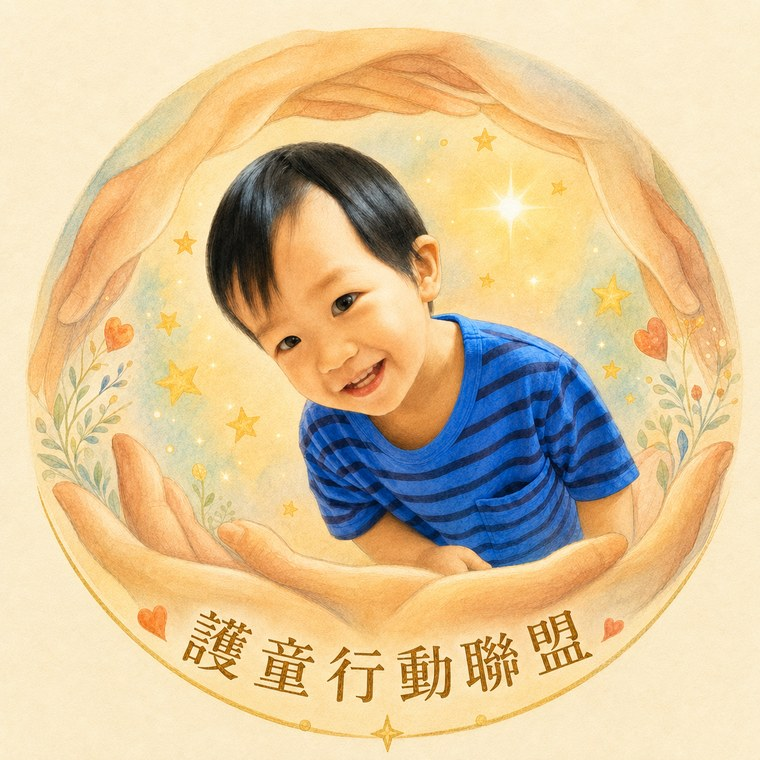
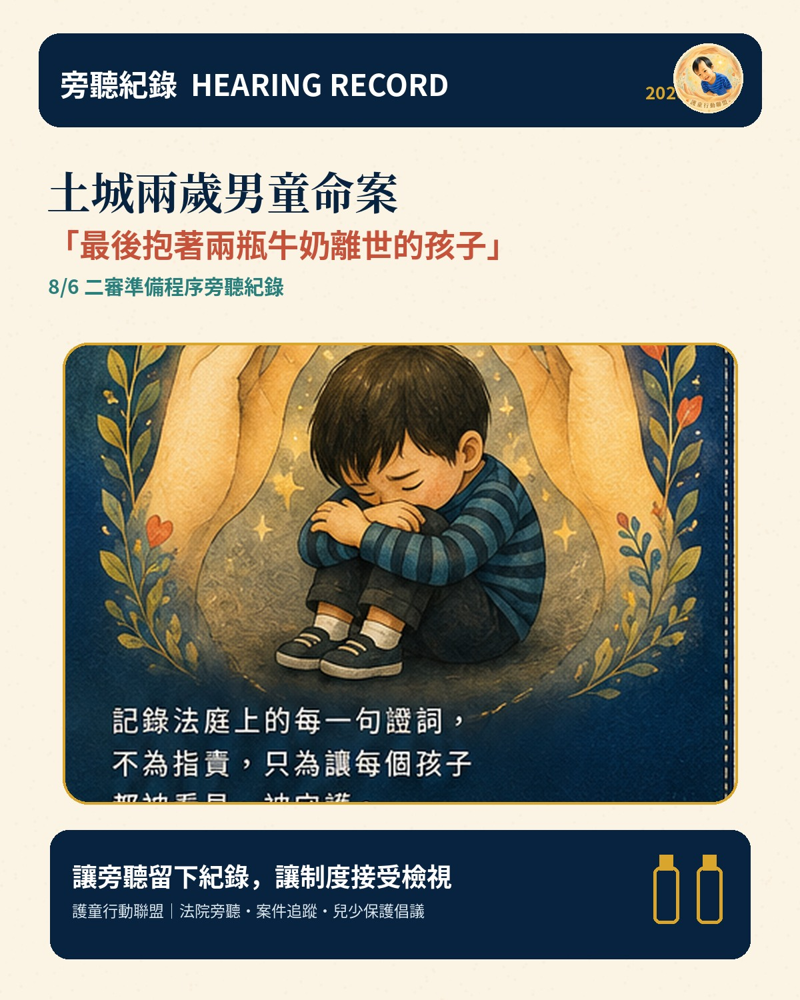
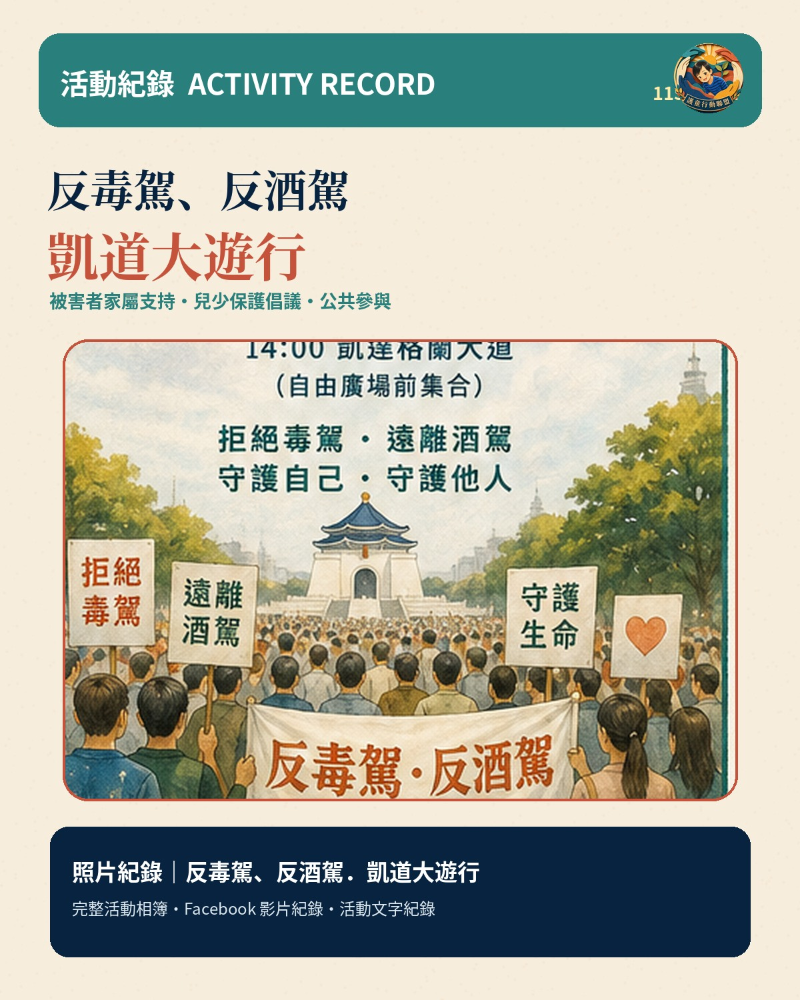
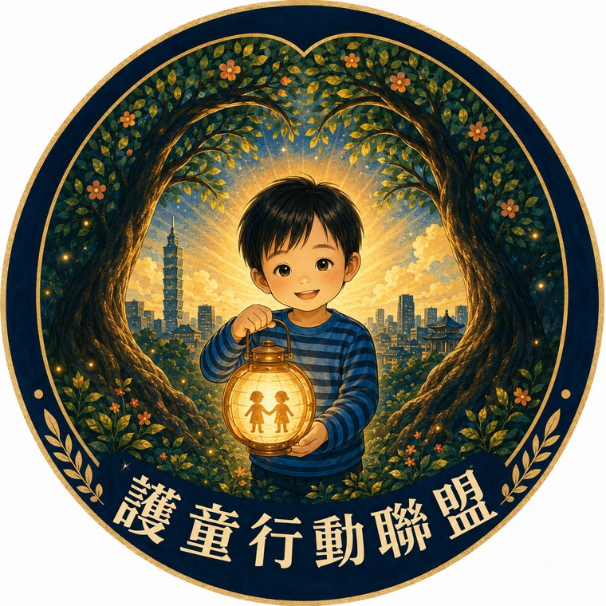
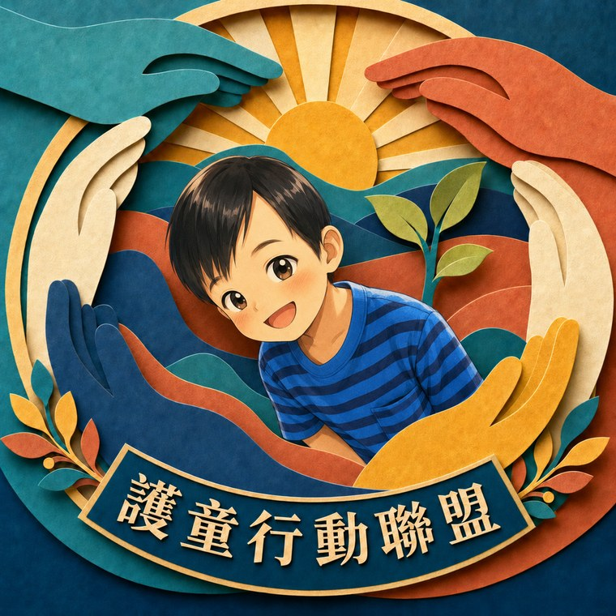
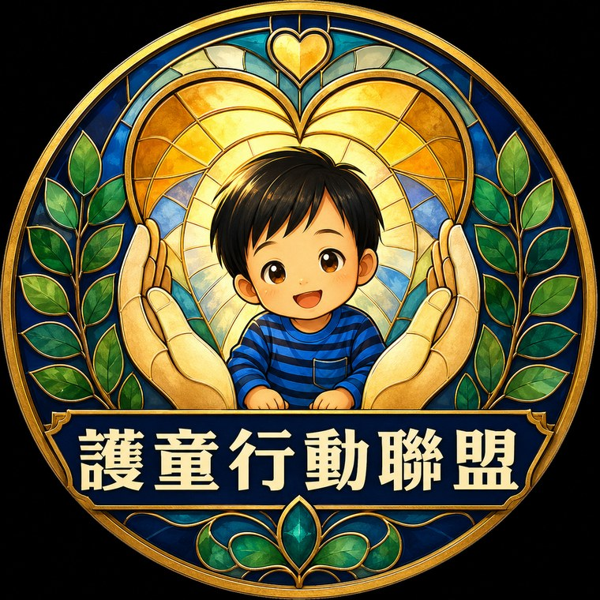

透過法院旁聽、案件追蹤、公開資料整理、法庭漫畫與公共倡議，讓每一個重要問題被看見，也讓制度真正回到「孩子優先」。
從法庭到街頭，留下可以被查閱、被理解、被持續追蹤的公共紀錄。

8/6 二審準備程序旁聽紀錄。

被害者家屬支持、兒少保護倡議與公共參與紀錄。
記錄案件審理進程、重要庭訊與司法程序。
整理公開庭期、裁判及可查證資訊。
將分散資訊整理成易懂脈絡，推動兒少保護制度落實。
尊重家屬的聲音，讓漫長司法路上的努力被看見。
以「手、心、燈火、樹與孩子」作為視覺語彙，代表陪伴、制度、希望與持續成長。



官方社群